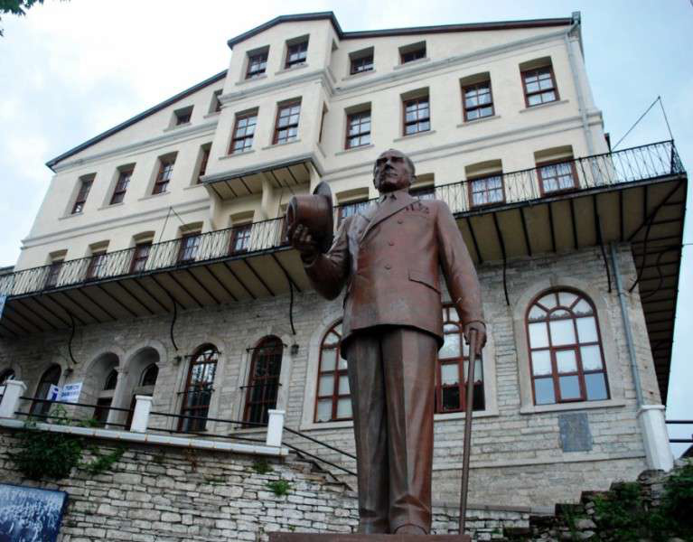

Asya Restorasyon; tarihi cami, kale, konak, köprü ve çarşıların aslına uygun restorasyonunu, kamu kurumlarının projeleri kapsamında titizlikle gerçekleştirir. Türkiye'nin dört bir yanında tamamladığımız eserlerle bu topraklara değer katıyoruz.

Asırlardır bu topraklarda pek çok uygarlığın bıraktığı izleri ileriki nesillere aktarabilmenin ne denli ciddi bir sorumluluk olduğunun farkında olarak, 20 yılı aşkın süredir çalışmalarımızı sürdürmekteyiz.
Firmamızın amacı; ulusal değerlerimiz olan tarihi kent dokusunu yaşatmak, tarihi ve kültürel değer taşıyan eserlerin özelliklerini koruyarak onarımlarının doğru bir görüşle yapılmasını sağlamaktır.
Tescilli yapıların türüne ve ihtiyacına göre, aslına uygun restorasyon ve koruma uygulamaları gerçekleştiriyoruz.
Tarihi cami ve mescitlerin minare, kubbe, kalem işi ve mihrap-minber işçiliğiyle aslına uygun ihyası.
Tarihi kale ve surların arkeolojik veriler ışığında sağlamlaştırılması ve özgün dokuya uygun restorasyonu.
Sivil mimari örneği konaklar ve anıtsal binaların özgün malzeme ve geleneksel tekniklerle restorasyonu.
Kesme taş kemer köprülerin ve su yapılarının özgün tekniğiyle restorasyonu ve güçlendirilmesi.
Tarihi ticaret yapıları ve çarşıların cephe sağlıklaştırması ve özgün kimliğiyle yeniden işlevlendirilmesi.
Tarihi yerleşimlerde sokak dokusunun, cephelerin ve kamusal alanların bütüncül koruma yaklaşımıyla iyileştirilmesi.
Kamu kurum ve kuruluşlarının idaresinde tamamladığımız restorasyon projelerinden bir seçki.
"Ulusal değerlerimiz olan tarihi kent dokusunu yaşatmak ve gelecek nesillere aktarmak."
Mimar ve restoratörlerden oluşan deneyimli teknik kadromuzla her projeye bilimsel koruma anlayışıyla yaklaşıyoruz.
Mimar
Yüksek Mimar
Mimar
Restoratör
Projelerimizde birlikte çalıştığımız kamu kurumları ve alanında uzman referanslarımız.
Rölöve ve Anıtlar Müdürü
İTÜ Öğretim Üyesi
Restorasyon Uzmanı, Doktora Öğretim Görevlisi
Körfez Belediyesi Başkan Yardımcısı
Tekirdağ İl Özel İdaresi Genel Sekreteri
Antakya Büyükşehir Belediyesi, İnşaat Mühendisi
Selçuklu Belediyesi Başkan Yardımcısı
Kazım Karabekir Mahallesi, 1033. Sokak No:6 Daire:3
Esenler / İstanbul